Intip fasilitas dan momen hangat di Dapur Senja.
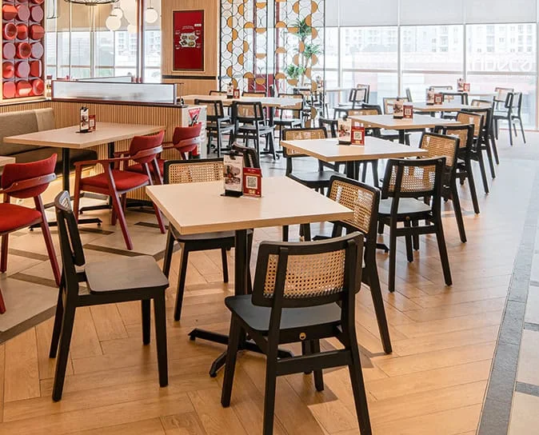
Area Makan Nyaman
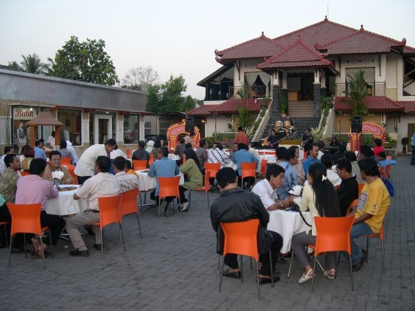
Area Teras Terbuka
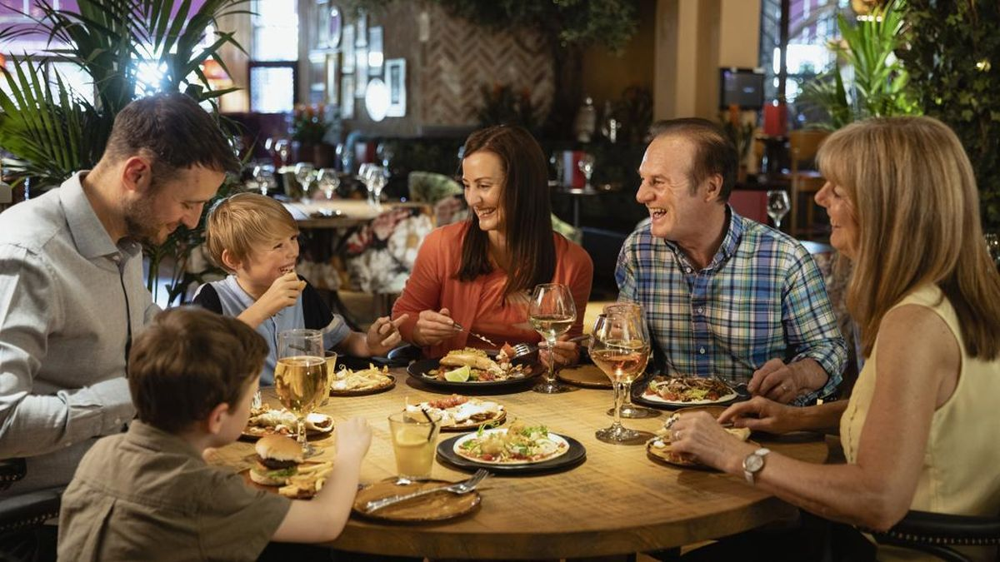
Momen Hangat Keluarga
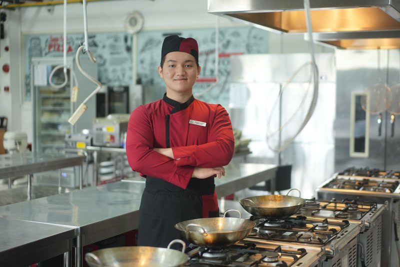
Dapur Profesional

Chef Berpengalaman

Panggung Akustik

Area Nonton Bareng
Klik hidangan untuk mengetahui cerita di balik rasanya.
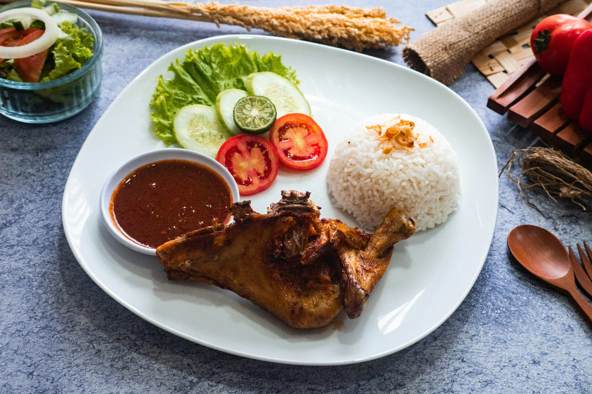
Ayam Bakar

Ayam Geprek
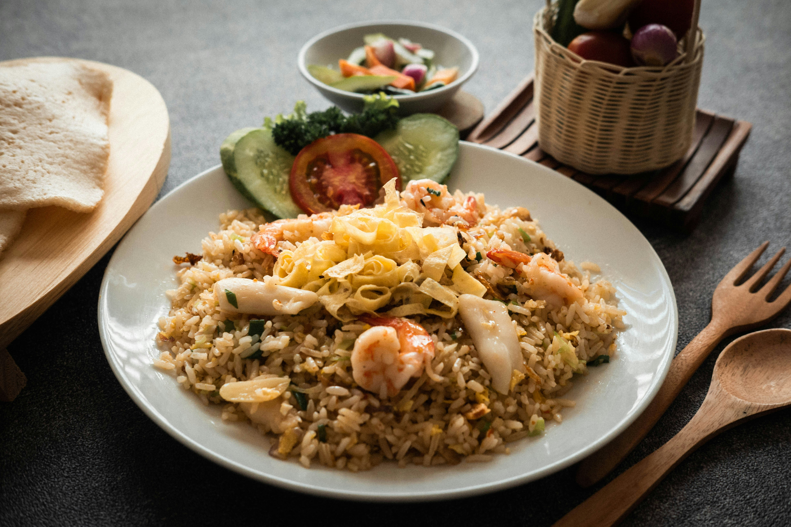
Nasi Goreng Spesial
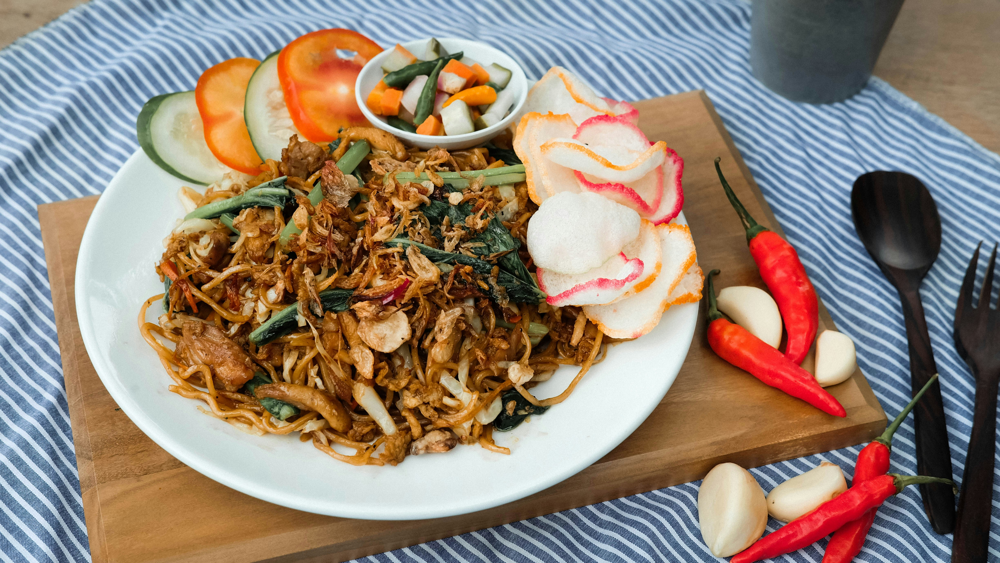
Mie Goreng
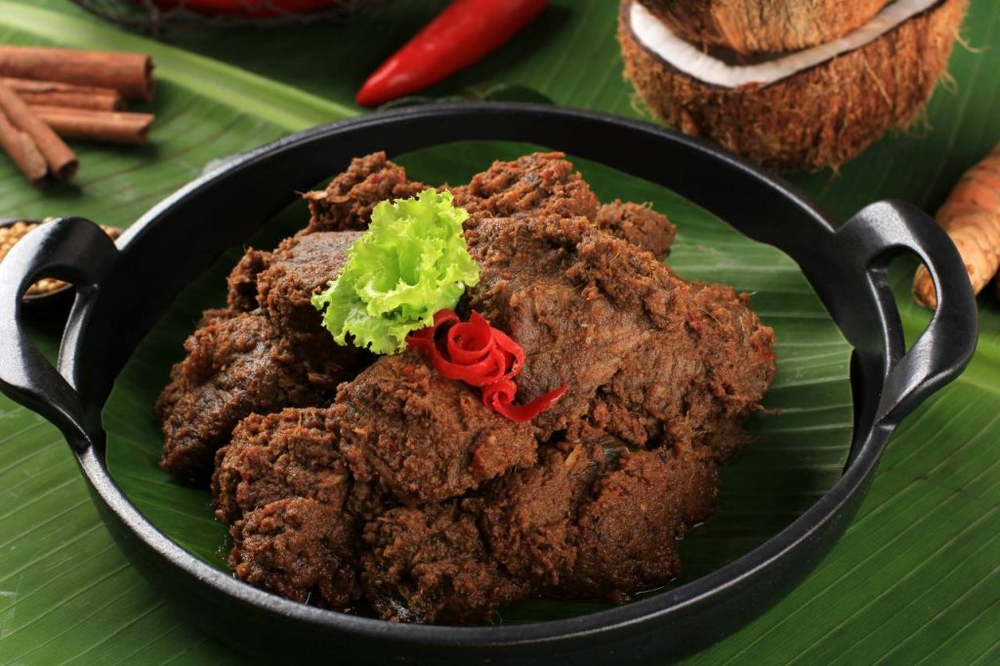
Rendang Sapi

Sate Ayam

Spaghetti
French Fries

Lumpia Goreng
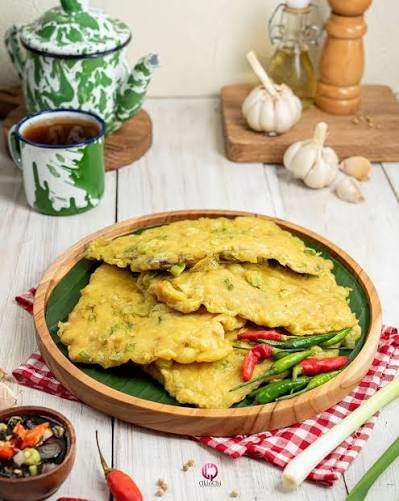
Tempe Mendoan
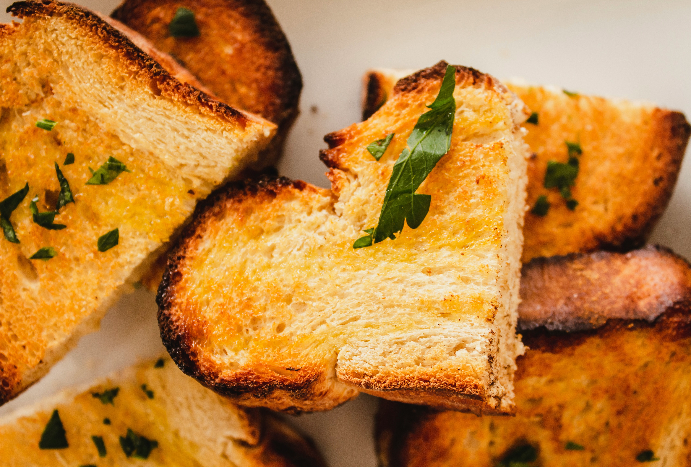
Roti Bakar

Pisang Bakar
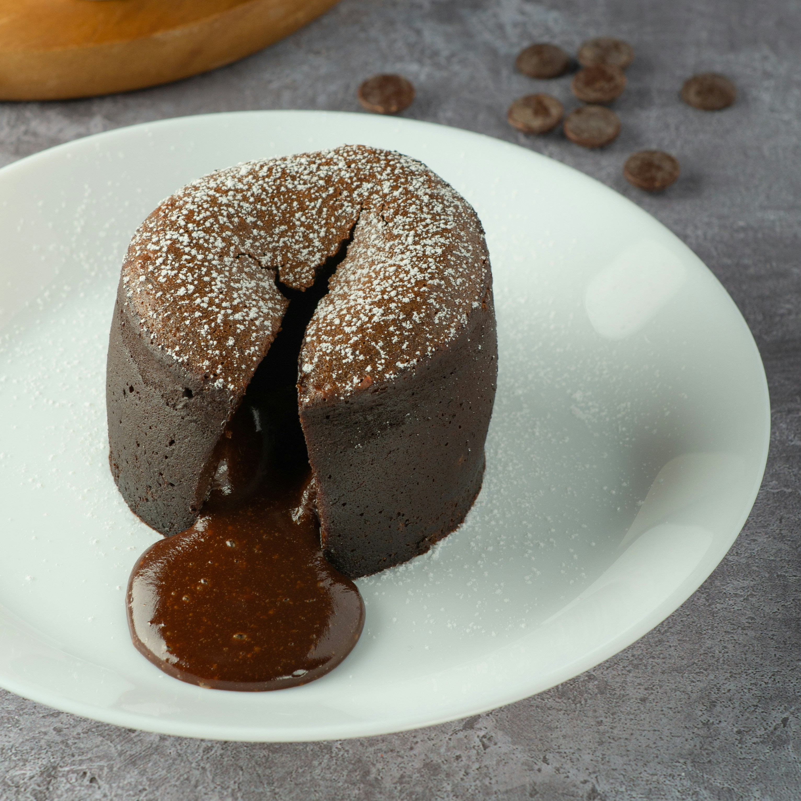
Choco Cake
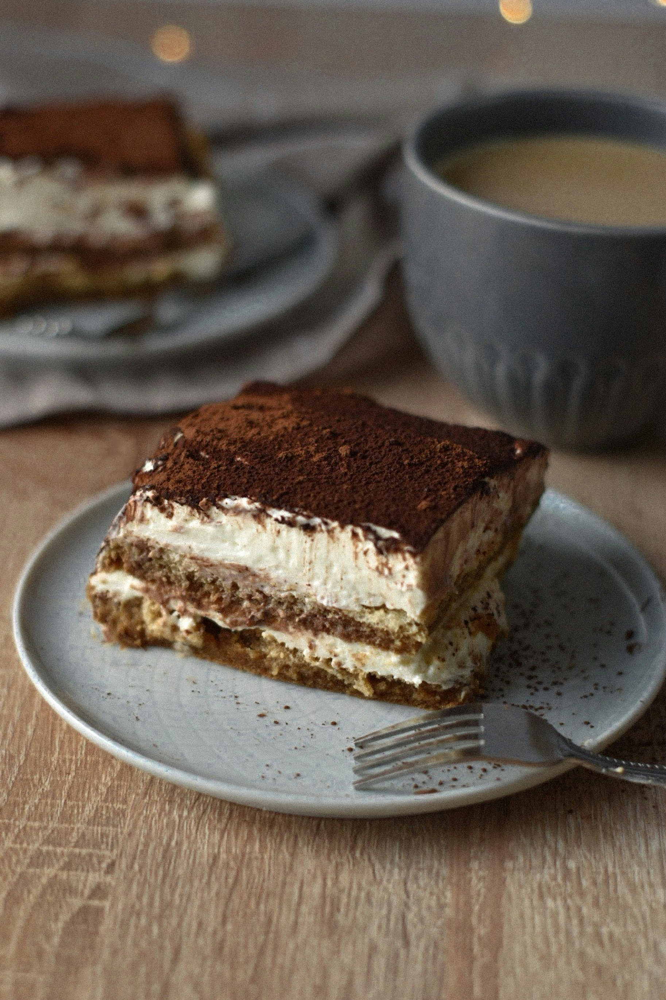
Tiramisu

Es Campur
Jus Alpukat

Berry Smoothies
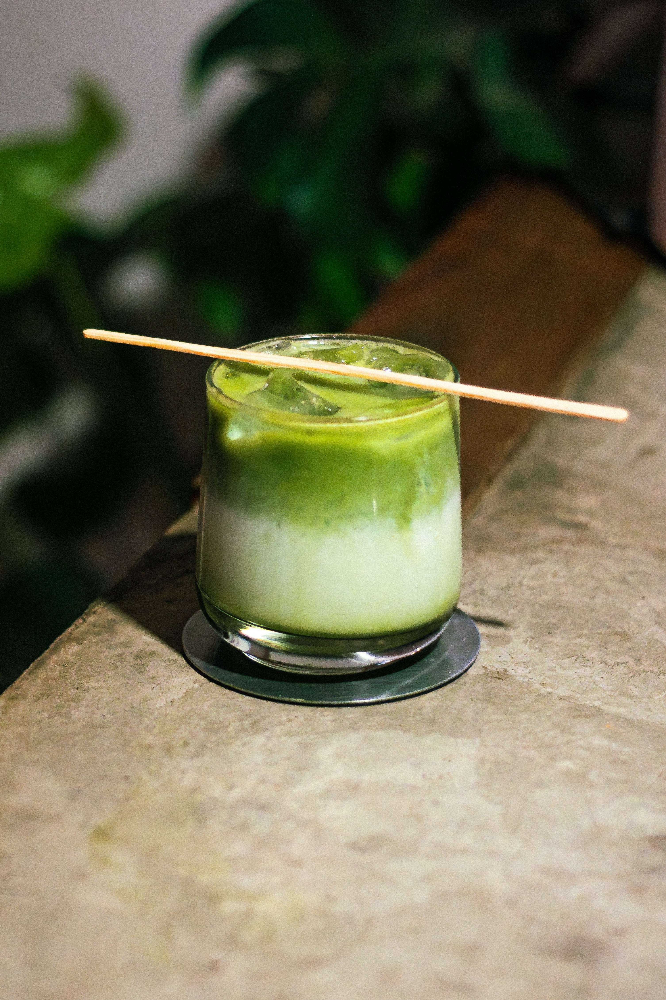
Matcha Latte
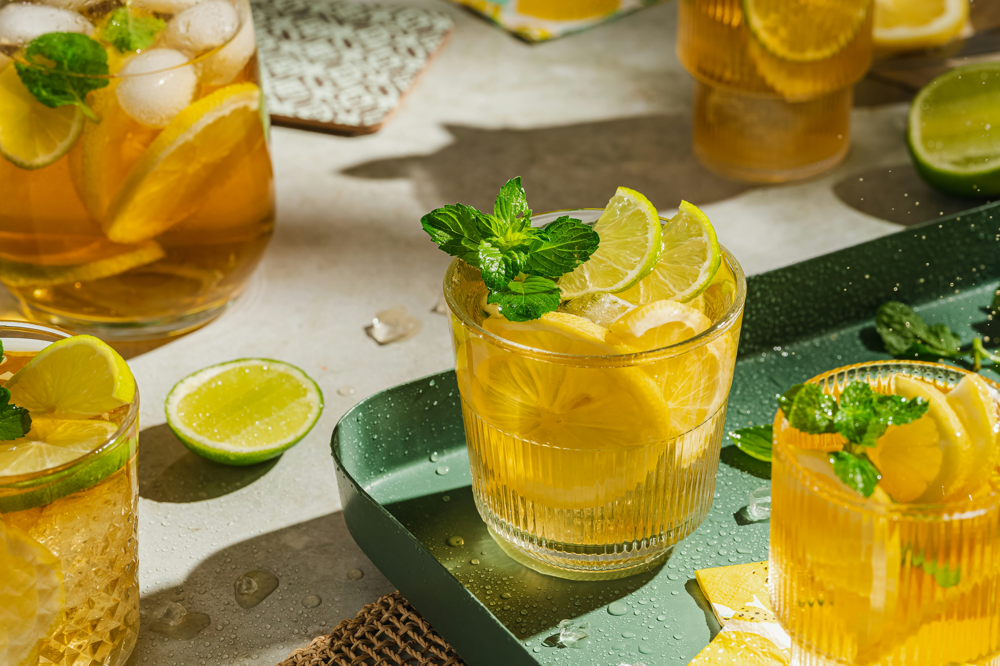
Lemon Tea
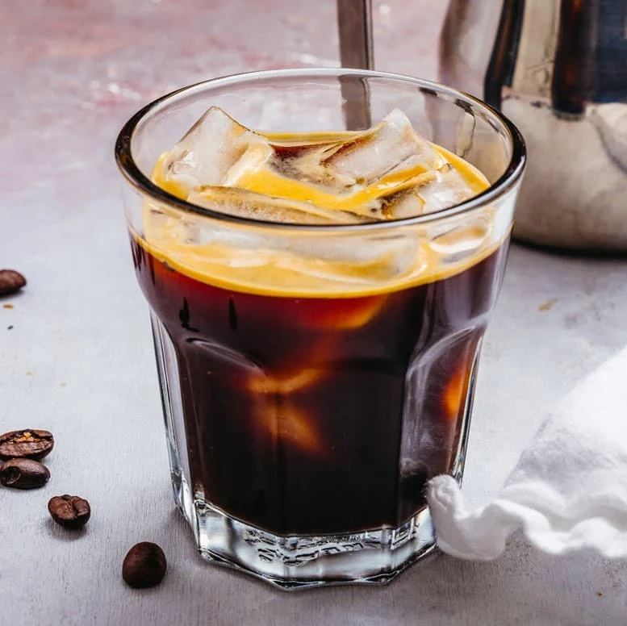
Americano
Nama Menu
Deskripsi cerita menu akan muncul di sini.